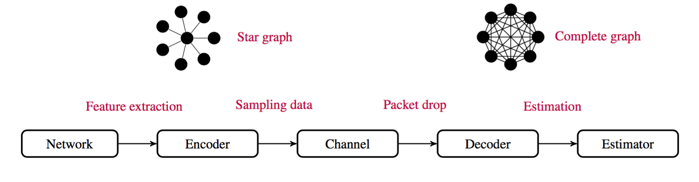

Jalal Arabneydi
-
Multi-Agent RL under Imperfect Information and Incomplete Knowledge
Show/Hide AbstractIn this project, we develop a decentralized RL algorithm that learns a near team-optimal solution for systems with multiple agents that wish to collaborate in order to accomplish a common task while a) agents have different information and b) agents do not know the model of the system completely. We illustrate the proposed approach for a two-user multi-access broadcast channel with a guaranteed performance bound, converging to zero exponentially. At every time instant, binary packets are arrived with unknown probability distributions at the users. The users are interested to maximize their throughput over a shared medium whereas they do not know whether or not the other user has a packet. For more details, see article and Thesis (Chapters 5-6).
Keywords: Decentralized inf., POMDP (Partial Observable Markov Decision Process), pseudo state.
-
Near-optimal sampling strategy with costly communication and prioritized data
Show/Hide AbstractA battery is charged and discharged randomly by renewable generators and active demands, respectively. The objective is to find the optimal frequency for transmitting the state of the battery under a transmission cost. Due to the imperfectness of the observation process at the decision making level, planning in the conventional belief space is difficult. Also, RL in belief space is conceptually challenging because the dynamics of the belief state depends on the model. To overcome these shortcomings, we introduce a new planning space equipped with a pseudo state to develop a near-optimal strategy. For more details, see article (Example 1).
Keywords: Sampling strategy, costly data collection, pseudo state.
-
Global Convergence Results in Deep Structured Teams and Games
Show/Hide AbstractIn this project, we establish some early results on the global convergence of Markov chain and linear quadratic models in deep structured teams/games. In such models, agents are coupled in dynamics and cost functions through a set of linear regressions of the states and actions. The salient property of the proposed algroithms is that their computational complexity is amenable to the number of decision makers. For more details, see article 1, article 2, and article 3.
Keywords: Deep Structured Teams/Games, non-standard dynamic program, gauge transformation.
-
Fair and Private-Preserving Strategy for Load Distribution
Show/Hide AbstractA controlled Markov chain formulation is proposed to model a homogeneous population of users with binary demands (i.e., off or on). In this project, an independent service operator (ISO) has a finite number of options when it comes to providing the users with electricity. The options represent various incentive means, generation resources, and price profiles. The objective of the ISO is to find optimal options in order to keep the distribution of demands close to a desired level (which varies with time) by incentivizing the users. For more details, see article 1, article 2, and article 3.
Keywords: Contract design, Markov chain model, mean-field teams.
-
Temperature Control in Heating, Ventilation, and Air Conditioning (HVAC) Systems
Show/Hide AbstractThe volatility in renewable generation can be compensated by making small changes in the demand of a large number of space heaters. To this end, we consider a population of space heaters that can be partitioned into several disjoint sub-populations. Each sub-population corresponds to a particular type of space heater that have similar physical characteristics such time response and nominal temperature. The objective is to drive the empirical mean of the temperatures of the heaters (representing the total energy consumption) close to a desired value while respecting the comfort zone (local set point) of each heater. For more details, see article.
Keywords: Large-scale systems, linear quadratic model, mean-field teams.
-
Micro-Grid and Demand-Side Management by Deep Structured Teams
Show/Hide AbstractThe power grid is a complex multi-facet network consisting of various interconnected components such as generators, consumers, transmission lines and marketing regulators. To adopt to the growing limitations of the future world, the traditional power grid needs to evolve to a smarter one with more efficient interactions between its components. Consequently, it is of vital interest to be able to optimize the performance of the grid by designing collaborative strategies between the components. To this end, we present several applications of deep structured teams in order to develop large-scale planning and learning strategies in the management of microgrids and demands.
Keywords: Deep structured teams, optimal resource allocation, private-preserving strategy.
-
Leader-Follower Tracking with Minimum Energy Consumption and Adversarial Player
Show/Hide AbstractIn this project, we investigate a soft-constrained minmax control problem of a leader-follower network. The network consists of one leader and an arbitrary number of followers that wish to reach consensus with minimum energy consumption in the presence of external disturbances. A social welfare cost function is defined, and it is shown that a unique saddle-point strategy exists which minimizes the worst-case value of the cost function. The solution is obtained by two scalable Riccati equations, which depend on a prescribed attenuation parameter, serving as a robustness factor. For the intermittent mean-field sharing information structure, an approximate saddle-point strategy is proposed, and its converges to the saddle-point is analyzed. For more details, see article 1, article 2, and article 3.
Keywords: Minmax optimization, leader-follower setup, mean-field teams.
-

Robust Decision-Making & Multi-Robot Systems
Show/Hide AbstractWe model a group of robots as a linear quadratic deep structured team, where the robots wish to cooperatively track a global target while taking into account their local targets. The robots are under cyber-physical attacks (e.g. denial of service). We propose a scalable receding horizon control problem and a quadratic programming algroithm to solve it.
Keywords: Deep structured teams, receding horizon control, quadratic programming.
-
Supply chain with Risk-Sensitive Cost Function
Show/Hide AbstractWe consider a supplier that provides a particular product to its consumers (e.g., the bandwidth provided by a telecommunication company). The product is distributed to the consumers through a number of distributors (hubs), each of which has its own operating capacity. The objective is to find a risk-sensitive solution for the supplier and distributors such that the delivered product is as close as possible to the supplier’s production level while the distributors’ demands are fulfilled. A closed-form low-complexity representation of the globally optimal strategy is obtained, whose computational complexity is independent of the number of distributors. In addition, it is shown that the risk-sensitive solution converges to the risk-neutral one as the number of decision makers increases to infinity. For more details, see article.
Keywords: Deep structured teams, risk-sensitive cost, Hamilton-Jacobi-Bellman (HJB) equation.
-
The Role of Reciprocal Behvaiour in Job Market
Show/Hide AbstractWe invetigate the effect of reciprocal behaviour of people in a society in response to low and high job-hiring seasons. It is observed that in the introduced reciprocal equilibrium, every unemployed individual exhibits an intuitive behavior, which is to be greedy all the time in order to find a job. However, employed individuals display a more sophisticated behavior. More precisely, when the anxiety factor is low, people tend to care about the well-being of the society and choose to be kind until a certain threshold. After this threshold, people become more and more greedy and less and less kind, as the anxiety factor increases. Another interesting observation is that people tend to be opportunistic (i.e., greedy) as the hiring season approaches its end. This is due to the fact that everyone knows that the chance of getting a job is going to drop.
Keywords: Reciprocal equilibrium, deep structured game, Markov chain.
-

Data Collection versus Data Estimation in Dynamic Networks
Show/Hide AbstractAn important question that often arises in the operation of networked systems is whether to collect the realtime data or to estimate them based on the previously collected data. Various factors should be taken into account such as how informative the data are at each time instant for state estimation, how costly and credible the collected data are, and how rapidly the data vary with time. Based on a novel planning space, a Bellman equation is proposed to identify a near-optimal strategy whose computational complexity is logarithmic with respect to the inverse of the desired maximum distance from the optimal solution, and polynomial with respect to the number of nodes. For the special case of linear dynamics, a separation principle is constructed wherein the optimal estimate is computed by a Kalman-like filter, irrespective of the probability distribution of random variables. It is shown that the complexity of finding the proposed sampling strategy, in this special case, is independent of the size of the state space and the number of nodes. For more details, see article.
Keywords: Data collection versus data estimation, separation theorem, large-scale networks.
-
A Mean-Field Team Approach to Minimize the Spread of Infection in a Network
Show/Hide AbstractWe propose a stochastic dynamic control strategy to prevent the spread of an infection over a homogeneous network. The infectious process is persistent, i.e., it continues to contaminate the network once it is established. It is assumed that there is a finite set of network management options available such as degrees of nodes and promotional plans to minimize the number of infected nodes while taking the implementation cost into account. Borrowing some techniques from mean-field team theory the optimal strategy is obtained by using dynamic programming decomposition and the convolution of some binomial probability mass functions. For infinite-population networks, the optimal solution is described by a Bellman equation. For more details, see article.
Keywords: Susceptible and infected states, Markov chain, mean-field teams.